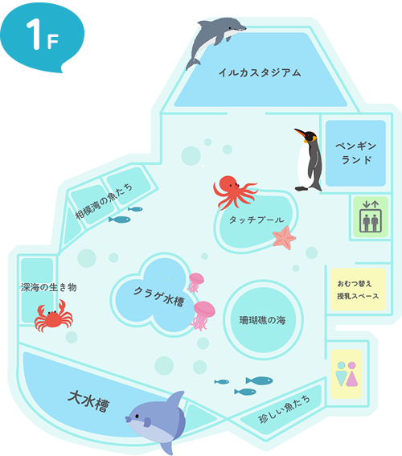
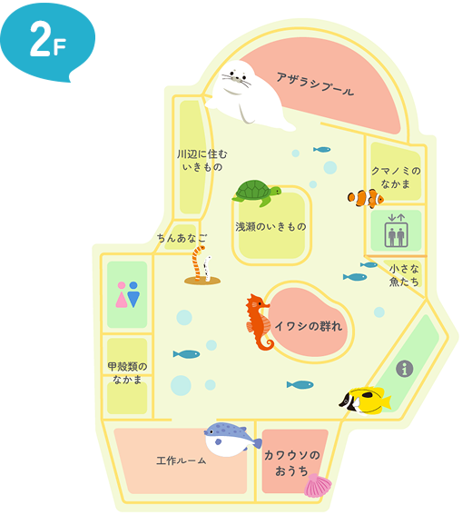
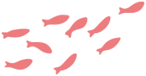
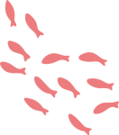
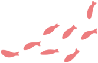
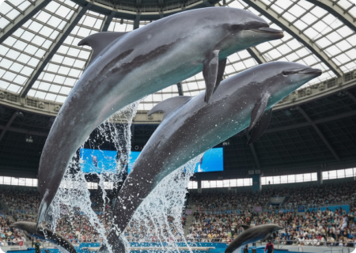
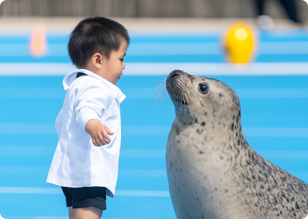

イルカ
高い知能をもち、
超音波で仲間と会話する海の哺乳類。
ペンギン
空は飛べないけれど泳ぎは得意!
氷の上をすべるように進む。
クラゲ
骨も脳もない不思議な生き物。
体のほとんどが水でできている。
大水槽
多くの生物がともに泳ぐ、
みなとみらい水族館の目玉!
海の生態系を再現している。

アザラシ
寒さから身を守るため
まんまるなからだをしている。
泳ぐときは意外とすばやい。
クマノミ
イソギンチャクと共生する魚。
お互いを敵から守りあっている。
チンアナゴ
チンアナゴの説明




イルカショー
1F イルカスタジアム
元気いっぱいのイルカたちが、ダイナミックなジャンプや息の合ったパフォーマンスを披露します。笑顔と感動にあふれるショーを、ぜひお楽しみください！



アザラシショー・えさやり体験
2F あざらしプール
アザラシたちのかわいい動きやジャンプを間近で楽しめます。えさやり体験では、飼育員と一緒にエサをあげながら、アザラシたちの個性にふれることができます。

ワークショップ
2F 工作ルーム
ボトルの中に広がる小さな海。海藻や貝殻、カラフルな砂を入れて、自分だけの『ボトリウム』を作ってみませんか？お家に持ち帰れば、水族館での思い出がずっとそばに輝き続けます。